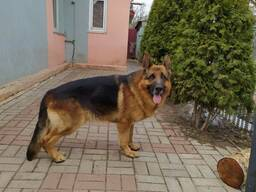
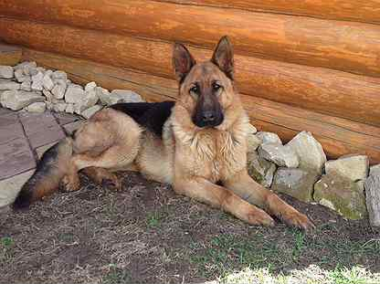
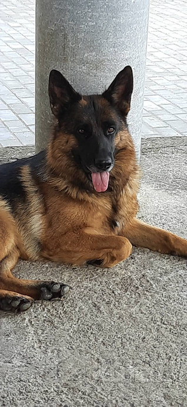
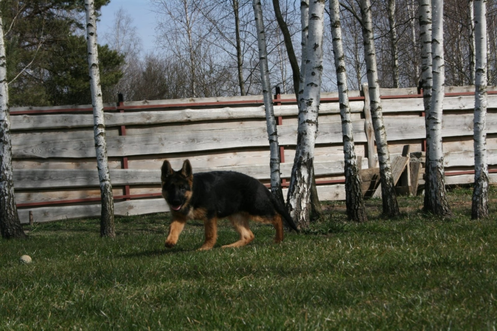
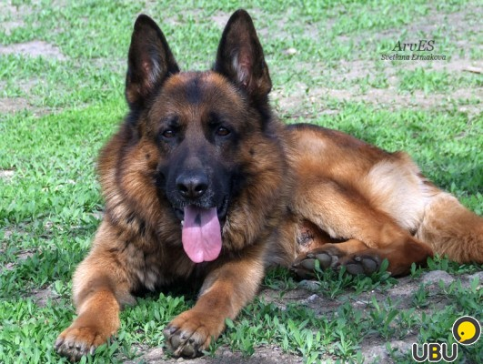
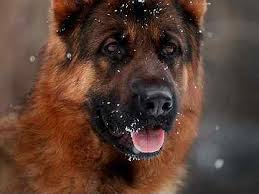

Как играть с собакой?

Играть с собакой — огромная радость для большинства людей. Игра — это естественное поведение для собак, особенно молодых. Игра также важна для психического и эмоционального благополучия собаки. В зависимости от интенсивности игры можно давать собаке большие физические нагрузки. Игра может варьироваться от неорганизованной, спонтанной, до спортивной. Старайтесь играть с собакой два раза в день в течение как минимум пятнадцати минут. Изучая правильные типы игрушек и игр, вы можете легко превратить рутину в самую забавную игру!
Большинство собак инстинктивно играют в игры на перетягивание каната. Выберите длинную, мягкую игрушку (например, верёвку с узлом), которую вы можете схватить, возьмитесь за игрушку руками, и пусть собака попробует её у вас перетянуть ("Отними!"). После того, как собака не отпускает канат в течение десяти-двадцати секунд, вы можете давать другие команды, такие как "Брось!".
Потребуется время, чтобы научить собаку командам. Используйте положительное подкрепление и лакомства.


Палка-приманка (удочка для собаки).
Это быстрый способ утомить вашу собаку. Идеально для гипер-активных питомцев, выносливых охотничьих и пастушьих собак.
Это длинная палка с верёвкой, прикреплённой к концу. На конце этой верёвки находится приманка, которая заманивает собаку в погоню. Отличное упражнение и психическая стимуляция, способ позволить собаке гоняться за своей естественной добычей. Отлично подходит для практики базового импульсного управления, такого как отпускание по команде.
Апорт!
Научите собаку приносить вещи по команде. Многие спортивные собаки были выведены с целью того, чтобы приносить (например, ретриверы), но на самом деле почти все собаки любят играть в эту игру. Вы можете использовать стандартную игрушку (мяч) или что-то вроде фрисби или диска. Привлеките внимание собаки к объекту, пока он всё ещё находится в вашей руке, убедитесь, что глаза питомца отслеживают его, когда вы его перемещаете, а затем бросьте игрушку. Позовите собаку обратно и используйте команду "Брось", как и в перетягивании каната.


Игра в салочки.
Вам потребуется партнёр. Каждый из вас располагается со своей стороны комнаты с игрушкой или каким-то угощением. По очереди подзывайте собаку и награждайте её, когда она подходит. Убедитесь, что ваша собака получает много вкусняшек каждый раз, когда она подчиняется команде. Это простой и интересный способ укрепить надёжный отзыв на команду "Ко мне!".
Найди лакомства!
Многие собаки никогда не устают от игры в поиск лакомств. Не имеет значения, что вы выбираете те же самые 10-20 укрытий и что вы всегда играете с нарезанной морковью. Недостаток вашего творчества собак совсем не беспокоит. Поиск в любом случае психически стимулирует, это интересный способ оттачивать естественные способности обоняния.
Для начала положите лакомства на пол, пока ваша собака находится в положении "Ждать". Дайте собаке команду на освобождение и призовите "Найти угощения". Укажите на них и скажите "Можно". Поощряйте, хваля каждый раз, когда питомец нашёл лакомство.

Интересные факты о собак:
- Собаки способны слышать ультразвук, недоступный для уха человека. Слух собак вообще в 10 раз острее, чем у людей.
- Собаки не различают цвета.
- Отпечатки носов собак уникальны – во всем мире не найдется двух одинаковых.